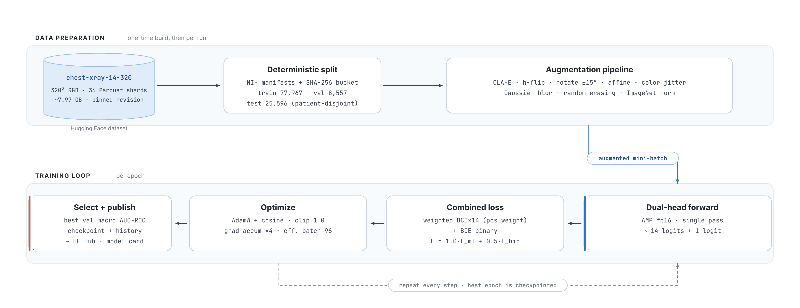
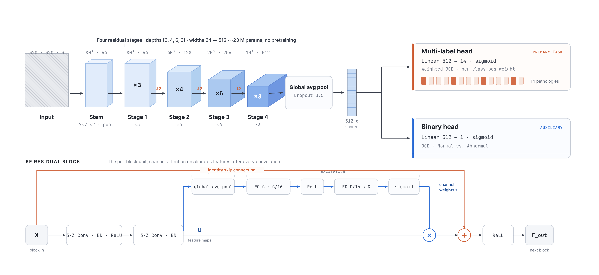
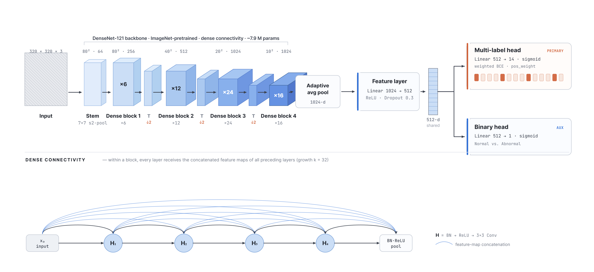
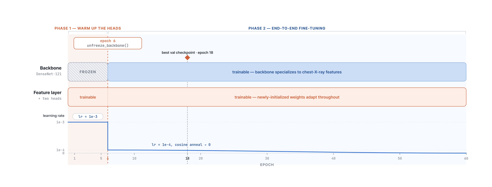

Chest radiography is among the most common diagnostic imaging exams worldwide, yet expert interpretation remains slow, costly, and unevenly available. The NIH ChestX-ray14 database — 112,120 frontal radiographs from 30,805 patients, each weakly labelled with up to fourteen thoracic pathologies mined from radiology reports — makes it possible to study image-level pathology classification at hospital scale. We implement and compare two convolutional networks under a single fixed protocol: a residual CNN with Squeeze-and-Excitation attention trained entirely from scratch, and a DenseNet-121 adapted from ImageNet by transfer learning, following the CheXNet design. Both share one backbone and two output heads, so a single forward pass yields a fourteen-class multi-label prediction and a binary Normal/Abnormal decision. On the held-out validation split the transfer-learned DenseNet reaches a macro-averaged AUC-ROC of 0.846, marginally above the published CheXNet benchmark of 0.841, while the from-scratch network reaches 0.801 with no pretrained weights. We report per-class results, examine where the models agree and differ, and discuss the data, modelling, and infrastructure limits that bound them. All training runs on free cloud GPUs from a reproducible, tested, continuously integrated code base. The results are encouraging, but fully automated classification of chest radiographs from weakly supervised, report-mined labels remains hard.
Deep convolutional networks trained on large annotated image collections have driven substantial gains in recognition, detection, and segmentation. Medical imaging has begun to benefit from the same paradigm, but it poses extra difficulties: pathological findings are often small and low-contrast relative to the full image, expert annotation is expensive, and ground-truth labels are frequently mined from free-text reports rather than verified by region-level markup.
Chest radiography is a natural testbed. It is the most common imaging exam in clinical practice, and a system that flags likely pathologies and separates normal from abnormal films would help radiologists prioritise their reading lists and extend basic screening to settings without specialist coverage. This motivation underlies the NIH ChestX-ray14 release (Wang et al., 2017) and the subsequent CheXNet result (Rajpurkar et al., 2017), which reported radiologist-level pneumonia detection and established DenseNet-121 as the reference architecture for this database.
The course brief requires two models on a shared dataset — one trained from scratch and one built with an alternative paradigm (transfer learning) — together with an explicit quantitative comparison. We frame the problem as two complementary supervised tasks on the same images. In the multi-label task the network predicts an independent probability for each of the fourteen pathologies; the labels are not mutually exclusive, so a single film may simultaneously show Effusion, Infiltration, and Atelectasis. This is the harder, clinically richer task and our primary evaluation target. In the binary task the network predicts a single Normal-versus-Abnormal score indicating whether any finding is present — the screening task, and a useful auxiliary signal on the shared features.
Both tasks are solved by one network with two heads on a shared backbone, so a single forward pass produces both predictions. This keeps the architecture comparison controlled: only the backbone changes, while task formulation, loss, data, and evaluation are held fixed. Throughout, we adopt the area under the ROC curve, macro-averaged over the fourteen pathologies, as the primary metric. AUC-ROC is threshold-independent and robust to severe class imbalance, and it is the measure reported by prior work on ChestX-ray14. Accuracy would be uninformative: a classifier that always predicts the absence of the rarest pathology, Hernia (prevalence well below 1%), scores over 99% accuracy on that class while detecting nothing of clinical value.
We use NIH ChestX-ray14 (Wang et al., 2017), one of the largest publicly available labelled chest X-ray collections: 112,120 frontal-view images from 30,805 unique patients, each tagged with zero or more of fourteen pathology labels mined from radiology reports by natural language processing. The labels are Atelectasis, Cardiomegaly, Effusion, Infiltration, Mass, Nodule, Pneumonia, Pneumothorax, Consolidation, Edema, Emphysema, Fibrosis, Pleural Thickening, and Hernia. Images with none of these findings are labelled "No Finding".
We shuffle the database once into a fixed 70/10/20 partition for training, validation, and testing, and store the assignment alongside the images so it is identical across every run and every model. The partition is frozen for reproducibility, and the test split is withheld from all model selection. Table 1 summarises the splits.
| Split | Images | Share | Role |
|---|---|---|---|
| Train | 78,468 | 70% | Parameter learning |
| Validation | 11,210 | 10% | Early stopping, selection, reported numbers |
| Test | 22,442 | 20% | Held out for final evaluation |
| Total | 112,120 | 100% |
The dataset is severely imbalanced in two respects. First, roughly 54% of all images carry no finding, so the binary task is close to balanced (about 46% abnormal) while the multi-label task is dominated by negatives. Second, prevalence across the fourteen pathologies spans more than two orders of magnitude: Infiltration and Effusion are common, whereas Hernia appears in well under 1% of films. Left unaddressed, a network minimises its loss most easily by predicting "absent" for every rare class.
We counteract this directly with per-class positive weighting in the loss (Section 3.2). For each pathology we compute pos_weight = neg / pos on the training split and pass it to a numerically stable BCEWithLogitsLoss. For the rarest class the positive weight reaches roughly 500, so a single missed Hernia contributes about as much to the loss as 500 missed Effusions. This is the single most important choice for non-trivial performance on the rare tail.
The raw NIH release is about 45 GB of 1024×1024 PNGs — too large to stream efficiently from free cloud GPUs within a practical time budget. We therefore built a one-time preprocessing pipeline, run as a Kaggle kernel, that decodes the raw archives, resizes every image to 320×320 RGB, and writes 36 Parquet shards totalling about 7.97 GB, published as a versioned Hugging Face dataset (arudaev/chest-xray-14-320). The dataset revision hash is pinned in source, so every run reads byte-identical data. We keep 320×320 rather than the common 224-pixel baseline because chest pathology often hinges on small, low-contrast findings such as nodules and fine infiltrates; the higher resolution preserves that detail, at the cost of a smaller batch size to fit GPU memory.

Both models share an identical output design. A shared backbone extracts a feature vector once, and two small linear heads read from it: a multi-label head producing fourteen logits with an independent sigmoid per pathology, and a binary head producing a single Normal-versus-Abnormal logit. This choice is deliberate. Computing both tasks from shared features is cheaper than training two separate networks; the binary task acts as an auxiliary signal that regularises the shared representation; and, most importantly for the comparison, it isolates the variable under study. When we compare the from-scratch model against the DenseNet, only the backbone differs — heads, loss, data, and evaluation are held constant.
Every component below is implemented in raw PyTorch, without a high-level training framework, so each decision is explicit and defensible. The settings are shared by both models except where Section 4.3 notes the two-phase schedule specific to the DenseNet.
| Component | Choice and justification |
|---|---|
| Loss | Combined BCEWithLogitsLoss, 1.0× multi-label + 0.5× binary. The fused sigmoid+BCE is numerically stable; the binary task is down-weighted so it supports rather than dominates the harder multi-label objective. |
| Class balancing | Per-class pos_weight on the multi-label loss, from training-split prevalence, to counteract the long tail (§2.2). The binary head uses plain BCE, being near-balanced. |
| Optimizer | AdamW with decoupled weight decay 1e-4 — Adam-family convergence with proper regularisation; a standard choice for modern vision fine-tuning. |
| LR schedule | Cosine annealing over the full epoch budget with a short warm-up, decaying smoothly towards zero for a stable final solution. |
| Mixed precision | fp16 forward/backward with fp32 master weights: ~1.7× faster on T4/P100 and roughly half the memory, which makes 320-pixel training feasible in the free nine-hour Kaggle window. |
| Grad. accumulation | Physical batch 24 over four steps gives an effective batch of 96, recovering large-batch stability despite 320-pixel memory cost. |
| Grad. clipping | Global-norm clipping at 1.0, to stop the weighted, imbalanced loss from producing occasional exploding updates on rare-class batches. |
| Reproducibility | One seed (42) across Python, NumPy, PyTorch, CUDA, with deterministic cuDNN. With the pinned dataset and frozen split, runs repeat. |
Augmentation is chosen to reflect plausible radiographic variation rather than generic image noise; each transform maps to a real source of acquisition variation, as detailed below.
| Augmentation | Rationale |
|---|---|
| Horizontal flip | Chest anatomy is broadly bilateral, so a mirrored film is still plausible. |
| Rotation (±15°) | Patients are rarely aligned perfectly to the detector. |
| Affine translate / shear | Simulates positioning shifts and beam-angle variation. |
| Colour jitter | Compensates for exposure differences between machines. |
| Gaussian blur (p=0.2) | Models varying sharpness from motion or detector resolution. |
| Random erasing (p=0.1) | Mimics radio-opaque artefacts (leads, clips, implants) and discourages reliance on one region. |
| ImageNet norm | Required by the pretrained DenseNet; applied to both models so inputs match. |
The code base also implements two optional, config-driven enhancements. CLAHE performs local contrast enhancement in LAB space to expose low-contrast findings, and label smoothing (ε=0.1) regularises against the noisy, report-mined labels. As reported in Section 5.3, the final DenseNet checkpoint used both, whereas the from-scratch checkpoint predates them — we state this explicitly rather than conceal it, and closing the gap is the first item of future work.
The first model is a residual convolutional network built and trained entirely from scratch, with no pretrained weights of any kind. Its architecture follows ResNet-50-equivalent depth and adds Squeeze-and-Excitation channel attention; it holds roughly 23 million parameters, all learned on chest X-rays alone.

The stem applies a 7×7 convolution at stride 2 followed by batch normalization, ReLU, and 3×3 max-pooling, capturing low-level edges and textures while reducing resolution fourfold. Four residual stages of depth [3, 4, 6, 3] follow. We chose ResNet-50 depth over a lighter [2,2,2,2] (ResNet-18) baseline because classifying fourteen simultaneous, often co-occurring signals needs more representational capacity, and the extra depth (about 23M against 11M parameters) is capacity worth its training cost. Each residual block is two 3×3 convolutions with a skip connection; the residual paths give gradients a short route and are what make a network this deep trainable at all, while batch normalization on every convolution stabilises training and permits a higher learning rate.
After each block, a Squeeze-and-Excitation module global-average-pools the feature map to a per-channel descriptor, learns per-channel importance through a small two-layer bottleneck with a sigmoid gate, and rescales the channels — channel-wise feature selection. A global average pool with dropout (0.5) then collapses the spatial dimensions without learned parameters, far less prone to overfitting than a large flatten-and-dense layer, and the dual heads (Linear 512→14 and Linear 512→1) read from the pooled vector. Convolutions use Kaiming (He) initialisation for the ReLU stack and the linear heads use Xavier; correct variance scaling is essential when training a deep network from random weights.
SE attention suits this problem well. Different pathologies activate different channels — the texture that signals Emphysema is not the one that signals Cardiomegaly. SE modules let the network amplify disease-relevant channels and suppress background channels per image, the kind of channel competition multi-label medical imaging creates, at negligible parameter cost (Hu et al., 2018). Training 23 million parameters from random initialisation on a noisy, imbalanced dataset is genuinely demanding — the network must learn edges, textures, and anatomy before disease, with no head start from natural-image pretraining. In return it provides a clean baseline against which the value of ImageNet transfer can be measured precisely (Section 5).
The second model is a DenseNet-121 pretrained on ImageNet and fine-tuned for our two tasks — the transfer-learning paradigm required by the brief, following the CheXNet design (Rajpurkar et al., 2017).

Three properties motivate this choice. Dense connectivity maximises feature reuse, strengthens gradient flow, and reaches strong accuracy with fewer parameters than a comparable ResNet — well suited to a free-GPU budget. ImageNet pretraining transfers well: low-level edges, gradients, and texture detectors are domain-agnostic, letting the network adapt to radiographic structure rather than relearn vision from scratch. Finally, the backbone is proven on this exact data: CheXNet reported a macro AUC-ROC of 0.841 with a single-head DenseNet-121, giving a literature-anchored target.
Fine-tuning a pretrained backbone with freshly initialised heads is delicate: the large early gradients from random heads can wash out, or catastrophically forget, the valuable ImageNet features. We avoid this with a two-phase schedule. In phase 1 (epochs 1–5) the backbone is frozen and only the feature layer and two heads are trained, at a learning rate of 1e-3, so the heads learn to read the fixed features without disturbing them. In phase 2 (from epoch 6) all layers are unfrozen at a tenfold lower 1e-4, letting the backbone gently specialise its mid- and high-level features to chest-X-ray textures without destroying what pretraining provided. This is the main reason the model converges quickly: its best validation checkpoint is at epoch 18, far earlier than the from-scratch model's epoch 60, because it starts from a strong initialisation rather than random noise.

All numbers below are measured on the held-out validation split at each model's best checkpoint, selected by macro AUC-ROC. The multi-label task is evaluated with per-class and macro AUC-ROC, the binary task with AUC-ROC and F1.
Table 4 reports the headline metrics. The transfer-learned DenseNet is higher on every metric, reaching a macro AUC-ROC of 0.846 against 0.801 for the from-scratch network — a gain of 4.5 points. It also converges far faster, reaching its best checkpoint at epoch 18 against epoch 60, despite fewer trainable parameters. The DenseNet edges past the CheXNet reference of 0.841, which we read as confirmation that our pipeline is sound rather than a meaningful improvement over that work.
| Metric | M1 · Scratch | M2 · Transfer | Δ |
|---|---|---|---|
| Multi-label macro AUC (primary) | 0.8008 | 0.8459 | +0.0451 |
| Binary AUC (Normal vs Abnormal) | 0.7571 | 0.7867 | +0.0296 |
| Binary F1 | 0.6474 | 0.6736 | +0.0262 |
| Best checkpoint epoch | 60 | 18 | −42 |
| Trainable parameters | ≈23 M | ≈7.9 M |
Per-class AUC-ROC for the DenseNet (Table 5) reveals a clear, clinically sensible pattern: it is strongest on findings with a distinct global shape or high contrast, and weakest on diffuse, low-contrast ones.
| Pathology | AUC | Pathology | AUC |
|---|---|---|---|
| Edema | 0.9255 | Pneumothorax | 0.8705 |
| Hernia | 0.9242 | Pleural Thick. | 0.8377 |
| Emphysema | 0.9107 | Atelectasis | 0.8334 |
| Cardiomegaly | 0.9010 | Fibrosis | 0.8085 |
| Effusion | 0.8873 | Nodule | 0.8084 |
| Mass | 0.8756 | Consolidation | 0.8063 |
| Pneumonia | 0.7397 | Infiltration | 0.7133 |
The bottom of the ranking is occupied by Infiltration and Pneumonia, which are diffuse, subtle, and notoriously noisy in this dataset's report-mined labels. The low Pneumonia score in particular owes much to the scarcity of positives (under 1% of films); a lower ceiling on these classes is expected rather than a modelling failure, as human readers struggle with the same findings. Both models follow the same ordering — Edema, Cardiomegaly, and Emphysema easy; Infiltration and Pneumonia hard — which indicates the difficulty ranking is a property of the data (label noise, finding subtlety) rather than of either architecture. The models differ in ceiling: the DenseNet lifts the whole curve, most visibly on the mid-difficulty findings (Mass, Pneumothorax, Atelectasis), where richer pretrained features help separate subtle structure from background.
For full reproducibility we record the precise configuration of the two runs that produced the checkpoints above (Table 6), reported faithfully — including the difference in preprocessing and regularisation between them.
| Setting | M1 · Custom CNN | M2 · DenseNet-121 |
|---|---|---|
| Backbone | SE-ResNet [3,4,6,3] | DenseNet-121 (ImageNet) |
| Input resolution | 320×320 RGB | 320×320 RGB |
| Optimizer / sched. | AdamW / cosine | AdamW / cosine |
| Learning rate | 1e-3 | 1e-3 → 1e-4 |
| Phys. / eff. batch | 24 / 96 (×4) | 24 / 96 (×4) |
| Mixed precision | enabled | enabled |
| Epochs / patience | 100 / 15 | 60 / 15 |
| CLAHE | disabled (earlier) | enabled |
| Label smoothing | 0.0 (earlier) | 0.1 |
| Best epoch | 60 | 18 |
| Compute | Kaggle T4/P100 | Kaggle T4/P100 |
The two runs differ in CLAHE and label smoothing. The architectural conclusion holds — the gap is large and consistent across all three metrics — but the exact 4.5-point margin should be read as an upper bound on the architecture effect, because the DenseNet run also carried two extra regularisers. Re-running the from-scratch model under identical preprocessing is the first item of future work.
The evaluation and demo paths add two techniques at no training cost. Test-time augmentation averages the sigmoid probabilities over four views (original, horizontal flip, and ±7° rotations), reducing prediction variance. A two-model ensemble then averages the test-time-augmented probabilities of both models; because a from-scratch CNN and a pretrained DenseNet have different inductive biases and fail on different images, averaging their outputs is a standard, reliable way to recover a small amount of macro AUC over either alone.
What this project delivers is a controlled image-level classification comparison, not a clinical pathology detector. Holding data, task formulation, heads, loss, and evaluation fixed, the backbone and its initialisation are the key variables — which isolates the architecture and pretraining effect cleanly. Transfer learning outperforms from-scratch training by about 4.5 macro AUC-ROC points while converging more than three times faster and training fewer parameters. This is the expected outcome, reproduced cleanly on 112,000 medical images under an identical protocol. The from-scratch model is not a failure: at 0.801 macro AUC-ROC it has learned genuine pathology signal, and it grounds the transfer-learning gain in a concrete, controlled number.
| Dimension | Model 1 — Custom CNN (scratch) | Model 2 — DenseNet-121 (transfer) |
|---|---|---|
| Performance | 0.8008 macro AUC — useful without pretraining, but clearly below the transfer model. | 0.8459 macro AUC; best classifier in this comparison, near the CheXNet 0.841 reference. |
| Convergence | Best at epoch 60; must learn vision from scratch first. | Best at epoch 18; starts from ImageNet features and adapts rather than learning from zero. |
| Parameters | ≈23 M, all trained on X-rays. | ≈7.9 M trainable on a dense backbone; more accurate with fewer trainable weights. |
| Data efficiency | Trained on the full 78k split; lower-data behaviour not ablated. | Converges sooner with ImageNet features; a lower-data advantage is plausible but untested. |
| Transparency | Every weight explainable from first principles; an ideal controlled baseline. | Inherits ImageNet priors that are powerful but less transparent. |
| Best role | Controlled baseline for quantifying the value of ImageNet pretraining on this data. | Best model for demo and comparison; not a clinical deployment model. |
The cloud-first pipeline is a project strength: NIH source → Kaggle preprocessing → Hugging Face dataset → training kernels → model hub and Space demo. Runs are fully deterministic; hyperparameters live in versioned YAML; every push triggers ruff linting, 51 pytest unit tests, and mypy type checking; artefacts upload automatically to the hub.
We compared a custom SE-ResNet trained from scratch (0.801 macro AUC-ROC) against a DenseNet-121 adapted by transfer learning (0.846) on the 112,120-image NIH ChestX-ray14 database. Both solve a fourteen-class multi-label task and a binary screening task through a shared backbone with two heads. The transfer-learned model surpasses the CheXNet reference and converges three times faster; the from-scratch baseline grounds the gain in a concrete, controlled number. The system is reproducible, continuously tested, and deployed as a live demo. Fully automated classification from weakly supervised labels remains hard; §6.2 marks the natural next steps.
This work was carried out as project work for the Deep Learning and Big Data course in the AIN program. We thank Kaggle for the free GPU compute and Hugging Face for the dataset, model, and Space hosting that made the cloud-only workflow possible.
All four members contributed to discussion, design review, and the final report and presentation. Primary ownership of the work packages was distributed as follows.
| Member | Primary contributions |
|---|---|
| Alexander Rudaev | Project setup and architecture; cloud training infrastructure and the Kaggle dispatch pipeline; Hugging Face dataset, model, and Space integration; CI/CD; report and deck assembly. |
| Fares Elbermawy | Data pipeline: NIH source ingestion, the 320×320 resize-and-shard preprocessing, dataset hosting and versioning, and the PyTorch dataset and transforms layer. |
| Sameer Kumar | Model 1 (custom SE-ResNet from scratch): architecture, residual and SE blocks, the training loop, loss and class balancing, and the scratch-model experiments. |
| Huraira Ali | Model 2 (DenseNet-121 transfer learning): two-phase fine-tuning, the evaluation and metrics suite, TTA and ensemble inference, and the Streamlit demo application. |
This table reflects primary ownership; in practice the work packages overlapped and were reviewed collaboratively.
| Resource | Location |
|---|---|
| Source code (GitHub) | github.com/arudaev/chexvision |
| Presentation deck | arudaev.github.io/chexvision |
| Live demo (Streamlit) | huggingface.co/spaces/arudaev/chexvision-demo |
| Dataset (320×320) | huggingface.co/datasets/arudaev/chest-xray-14-320 |
| Model 1 — custom CNN | huggingface.co/arudaev/chexvision-scratch |
| Model 2 — DenseNet | huggingface.co/arudaev/chexvision-densenet |